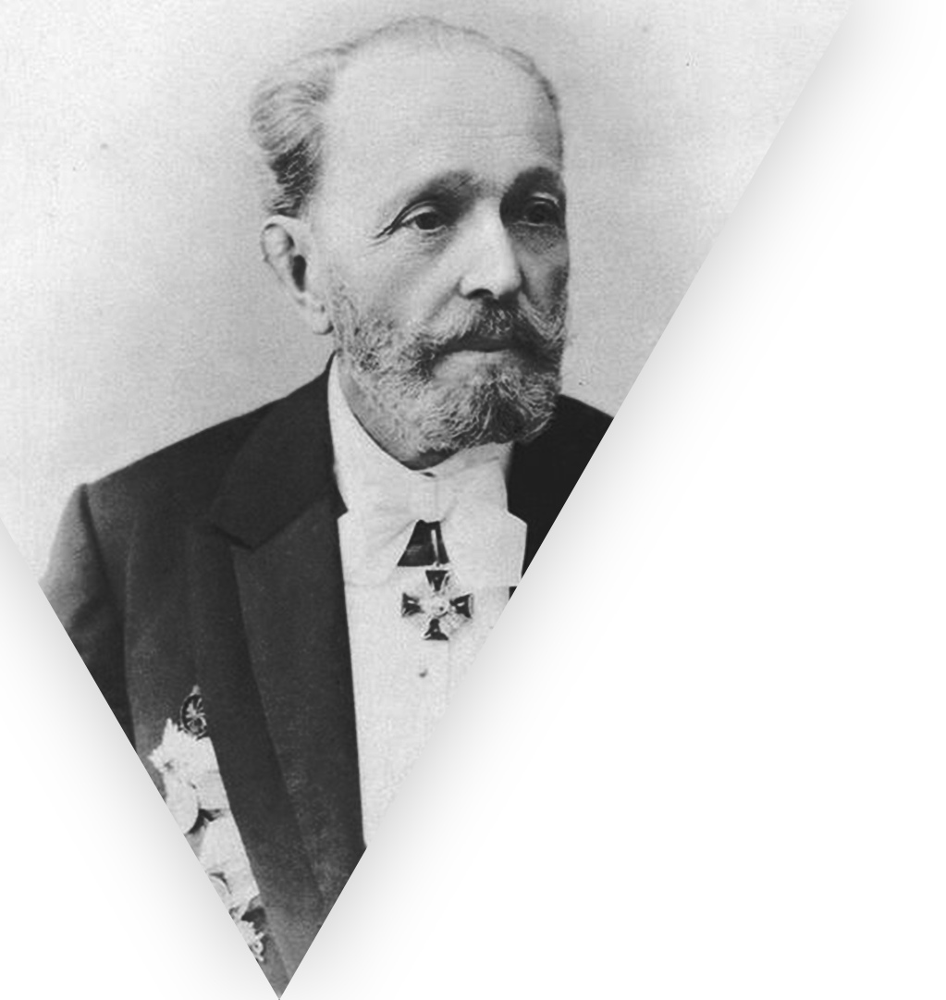

Мариус Петипа
11 марта 1818 — 14 июля 1910
«Балет — серьезное искусство, в котором должны главенствовать пластика и красота, а не всевозможные прыжки, бессмысленные кружения и поднимание ног выше головы… Так балет падает, безусловно, падает».
